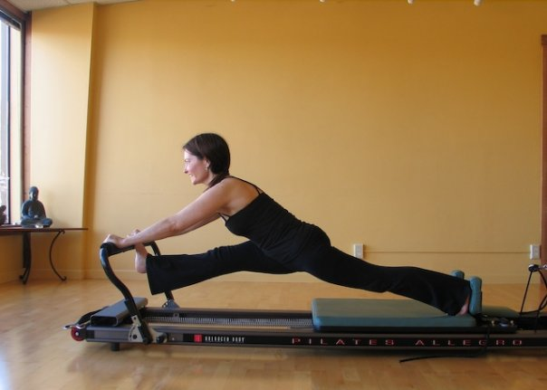

Berkeley, CA 510-912-0358
Certified Pilates Instructor
Certified Massage Practitionare
Yoga Instructor
I have been teaching Pilates for 12 years. I was recruited into Pilates by Madeline Black, an “Elder” in the Pilates tradition. My certifications were through Physical Mind Institute in 2004, Advanced Training with Carol Appel (Romana Kryzanowska lineage) in 2004, and Mat certification with Thomas McCook in 2003. In 2009, I was certified in Essalen Swedish Massage, which I added to help my clients release and relax unruly muscles that seem to refuse training. I was certified in TRX training while teaching at Equinox gyms in 2010 as a way to expand the fitness aspects of fitness training. My unquenchable thirst for understanding how the body works has lead to additional training in Muscle Activation Testing and Isometric Exercise (MAT TM), acupressure and out-door sports, all of which I incorporate in my private practice.

As a competitive athlete gymnastics, cross country running, diving and swimming have contributed to a deeper understanding of how mind, muscles and bones work together. As a ballet dancer and teacher and yoga instructor, the elements of finesse, self empowerment and patience make regular appearances in my teaching style. I take a Somatic approach to health and fitness providing an inspirational environment to explore the mind/body connection. I have been using movement as therapy since I started teaching and have successfully helped students overcome painful conditions including sciatica, rotator cuff injuries, RSI, and other chronic conditions. My clients include non-active students who want to conquer group classes, athletes, especially runners and dancers, who want more benefit from their intense workouts, and those seeking relief from chronic pain. I design programs and workouts specifically to suit your needs and sensibilities and will challenge you at any level to take the extra step.
Reach out if you are interested in working together and/or talk about your body!
-Leanne Aho